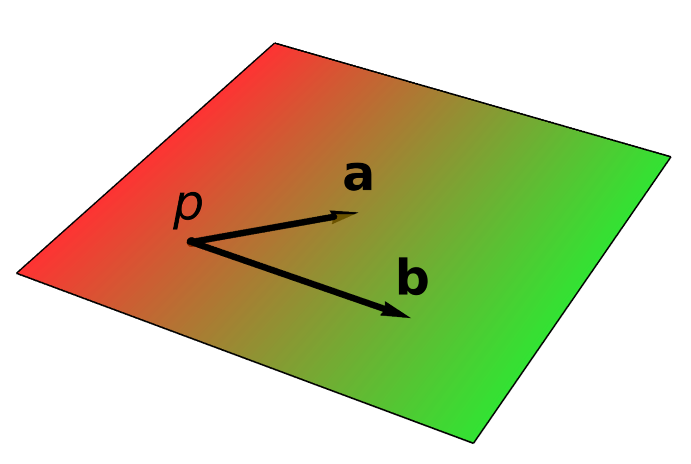
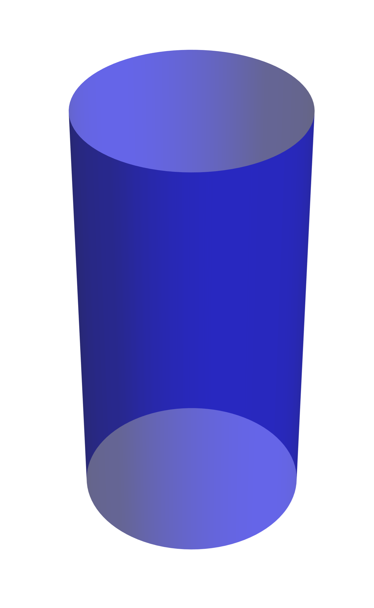
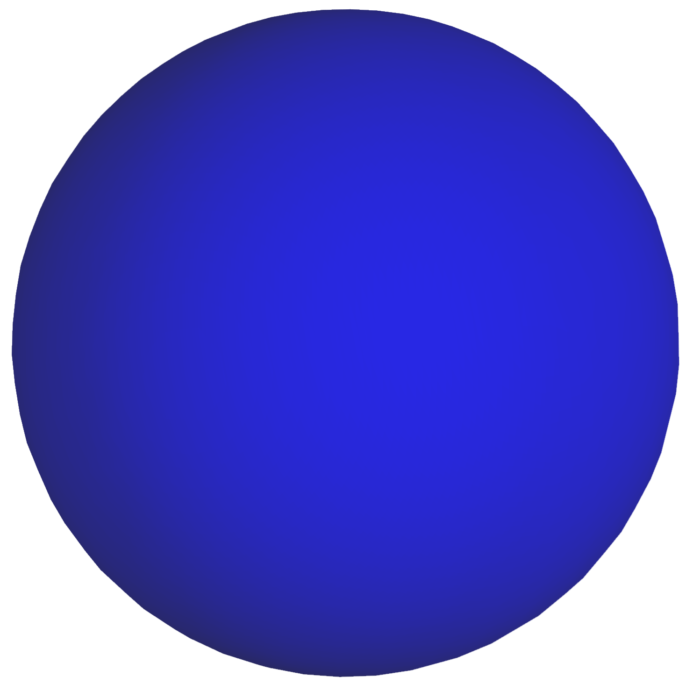
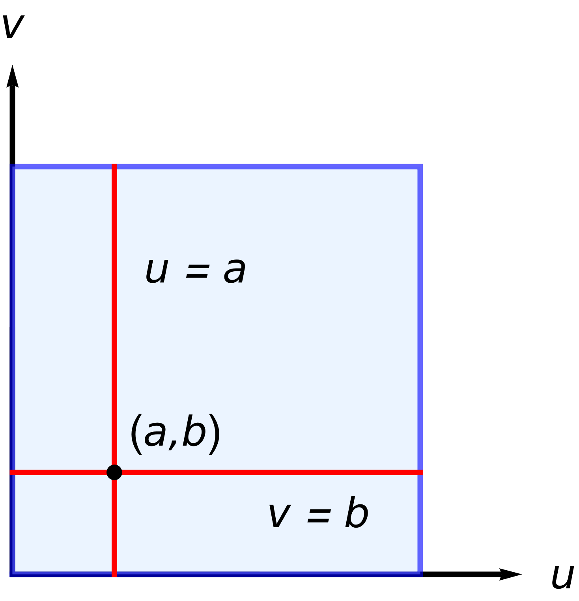
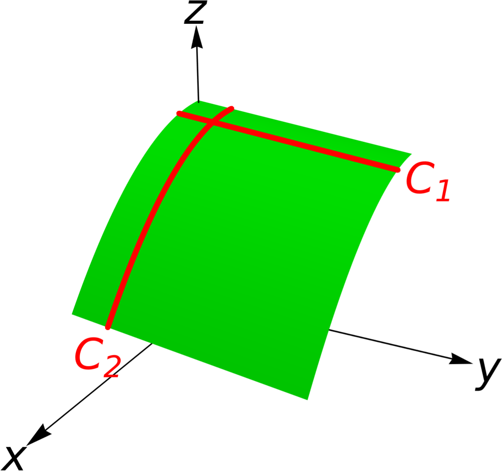

Parametric Surfaces
In this section we will discuss parametric surfaces in $\RR^3$. Essentially, a parametric surface in $\RR^3$ is a set of points that can be described by a function $\bf{r}$ of two variables. We will see how to compute the tangent plane of a surface at a point, as well as how to use a double integral to find the area of a surface.
Parametric Surfaces in $\RR^3$
Note that a parametrization $\bf{r}$ is a function that takes two variables and returns a vector in $\RR^3$. Thus, if $(u,v)$ is a point in the domain $D$ of $\bf{r}$, then we can write \[ \bf{r}(u,v)=\langle x(u,v),y(u,v),z(u,v)\rangle, \] where $x,\,y,\,z\colon D\to \RR$ are functions of two variables. Therefore, a point $(x,y,z)$ is in $S$ if there exists a point $(u,v)\in D$ such that \[ x=x(u,v),\qquad y=y(u,v),\qquad z=z(u,v). \] The above equations are called the parametric equations of $S$.
Solution.
For example, we can parametrize the cone by letting $x=u$ and $y=v$, so that $z=\sqrt{u^2+v^2}$. Therefore, a set of parametric equations of the cone would be \[ x=u,\qquad y=v,\qquad z=\sqrt{u^2+v^2}, \qquad (u,v)\in \RR^2. \]
Alternatively, we could look at the cone in cylindrical coordinates, and the equation $z=\sqrt{x^2+y^2}$ becomes $z=r$. Changing from cylindrical coordinates to rectangular coordinates and letting $r=u$ and $\theta=v$, we obtain the parametric equations \[ x=u\cos v, \qquad y=u\sin v,\qquad z=u,\qquad r>0, \, 0\leq\theta\leq 2\pi. \]
We now give some examples of parametrizations for well-known surfaces:



Grid Curves
Suppose $S$ is a parametric surface given by the parametrization $\bf{r}(u,v)$. Using vertical and horizontal lines in the plane, we can construct two families of curves in $S$.
For example, if we fix $v=b$ to be constant and we let $u$ vary, we obtain the vector function $\bf{r}(u,b)$, which only depends on $u$. This vector function describes a curve $C_1$ in $S$.
Similarly, if we set $u=a$ to be a constant and let $v$ vary, we get the vector function $\bf{r}(a,v)$ of $v$. This function parametrizes a curve $C_2$ in $S$.
The curves $C_1$ and $C_2$ are known as grid curves of the surface $S$. Note that different parametrizations of $S$ may yield different families of grid curves.

